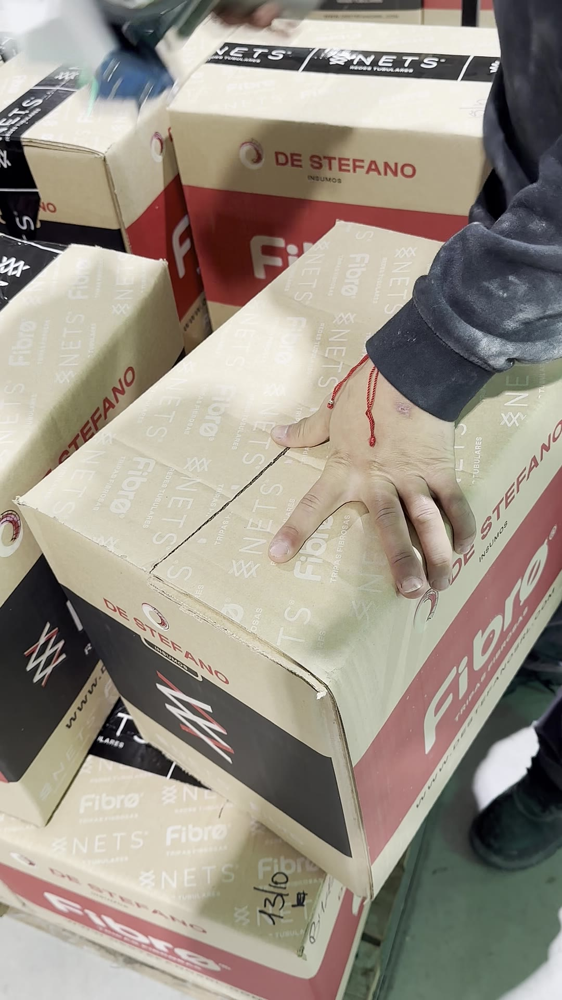

Fibrous casing for salami
Calibres Ø45 to Ø58 for straight salami and longaniza, Ø80 to Ø107 for Milano salami. Meat-cling treatment for pieces sold in the casing, shirred into sticks with RTU treatment.

- Ø45, 50, 55 and 58straight salami and longaniza
- Ø80, 95 and 107Milano salami
- Meat clinginner treatment
- RTUno soaking

Calibres by type of salami
| Product | Calibre (mm) |
|---|---|
| Straight salami | Ø45, 50, 55 and 58 |
| Longaniza | Ø45 |
| Milano salami | Ø80, 95 and 107 |
Milano salami with net
For Milano salami, in addition to the casing, a made-to-measure non-elastic net.
Frequently asked questions
Does the casing stay on the salami?
Yes, with the meat-cling inner treatment the casing follows the shrinkage of drying and is sold with the piece.